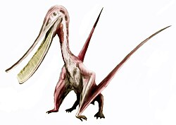

Triyas, Mezozoyik Zaman'ın ilk ve en kısa dönemidir. İsmini Almanya'daki üç farklı kayaç katmanının (Buntsandstein, Muschelkalk ve Keuper) oluşturduğu "üçlü" yapıdan alan bu dönem, biyosferin Permiyen felaketinden sonra kendini yeniden inşa ettiği kritik bir evrimsel süreci temsil eder.
Pangea'nın Kuraklığı ve Dinozorların Doğuşu
Triyas Dönemi, hem coğrafi birleşimlerin zirvesini hem de modern ekosistemlerin ilk tohumlarını barındırır:
• Süperkıta Pangea: Yerkürenin neredeyse tüm kara parçaları Pangea adı verilen tek bir süper kıtada toplanmış durumdaydı.
• Arkozorların Yükselişi: Günümüz timsahlarının atalarını ve gökyüzünün ilk uzman uçucuları olan teruzorları meydana getirmiştir.
• Dinozorlar ve Memeliler: İlk dinozor türleri ve oldukça küçük cüsseli olan ilk gerçek memeliler Geç Triyas evresinde evrimleşmiştir.
• Deniz Yaşamı: Günümüz mercan resifleri ilk kez Tetis Denizi'nde ortaya çıkmış; dev deniz sürüngenleri okyanusların en güçlü yırtıcıları olmuştur.
• Triyas-Jura Yok Oluşu: Birçok kara grubunu yok eden kitlesel yok oluşla sona ermiş; bu durum dinozorların mutlak hakimiyetine zemin hazırlamıştır.

Triyas döneminde gökyüzüne hakim olmaya başlayan ilk uçan sürüngenlerden (Teruzorlar) biri olan Pterodaustro'nun temsili illüstrasyonu.